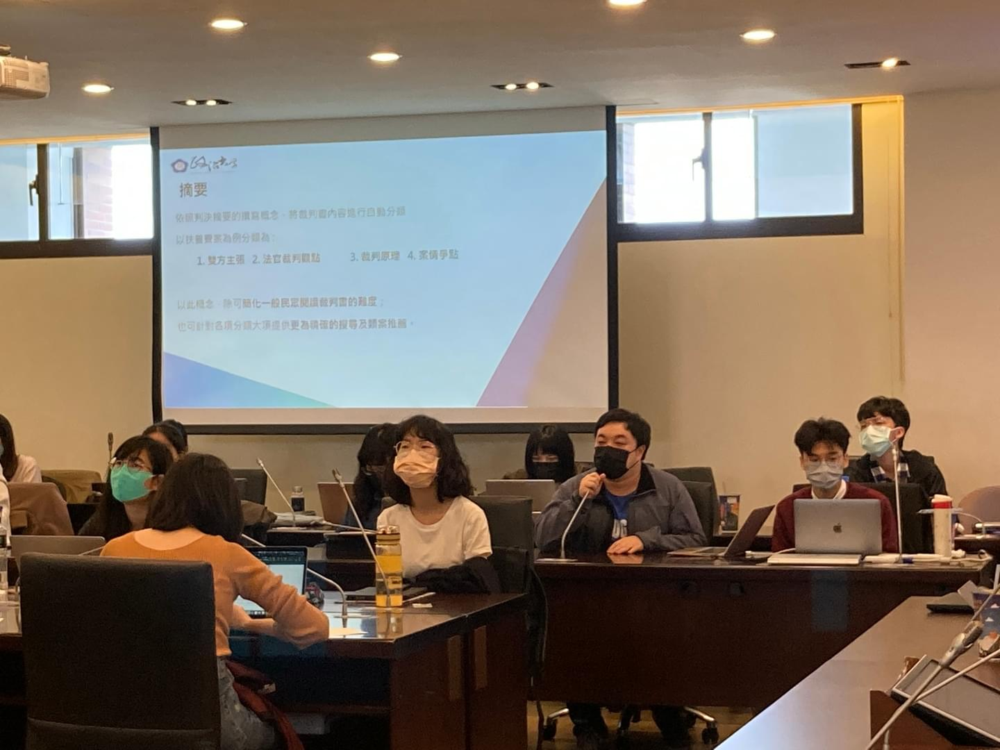
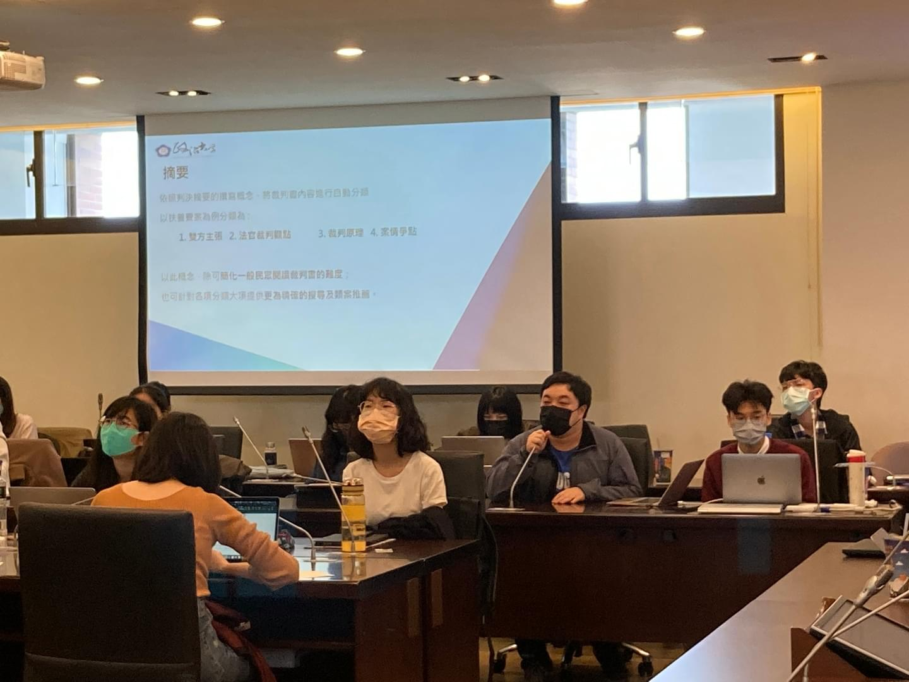

檢視司法院的數位智能法院政策，分析法院程序電子化、數位化、線上化對於訴訟行為之影響，建構法理基礎，作為長遠政策發展的參考依據，並與國際接軌。
彙整實證資料並分析裁判模式，此一方面可作為預測未來裁判的基礎，一方面也可做為檢視裁判妥適性的依據；此外本研究成果累積的實證資料亦可作為進一步發展法律科技工具的原料。
展開法律資料分析學，藉由法律學者與資訊科學學者兼的跨領域合作，將資料分析技術應用於法律制度研究，與國際法律資料學研究對話。
一方面探究司法程序之數位化、智能化及法律科技對於訴訟權保障、正當程序、權利保護及接近正義之影響，一方面結合法律科技之應用，就特定類型知識漸進一部歸納裁判模式及研究可行的裁判預測系統。
2022/4/25 台大法律學院霖澤館
created with
Website Builder Software .
 
